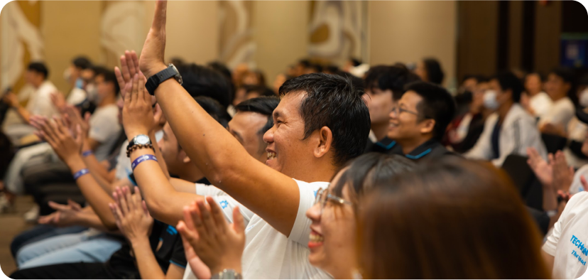
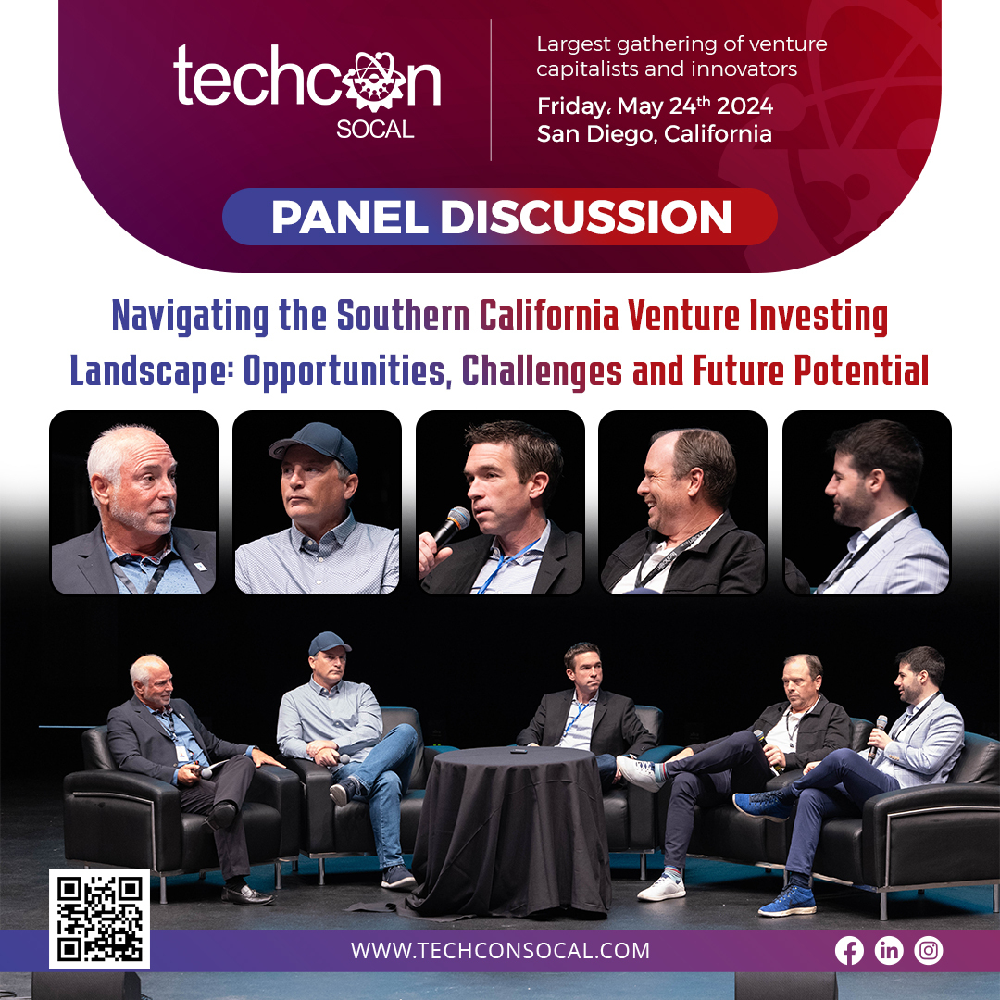
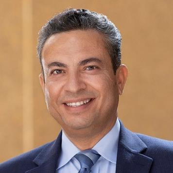

History
TechCon® North America Training and Expo has a trusted history of providing industry experts to lead
discussions on the technical development and solutions which improve key high voltage maintenance
programs and asset management strategies for the aging electrical grid infrastructure. Since 1996,
TechCon North America has been produced by TJ|H2b Analytical Services, a senior leader in the oil
analysis industry.


Mission
If you want to learn about industry changes, upcoming technology, and share recommendations or ideas,
attend TechCon®. Hear details about sensitive topics, topical subjects and if you want access to high
level utility industry experts who are eager to share their vast knowledge and experience, TechCon® is
the educational event for you.

Past Speakers
Ahmad Ababneh

Ababneh has worked in various electric operations and engineering roles. Most recently, Ababneh was
Vice President of Major Projects and Programs where his portfolio included electric transmission and
distribution major project's design and construction.
Dr. Michelle Kutzleb
Dr. Michelle Kutzleb is the Director of Global Operations at TJ|H2b Analytical Services. Dr. Kutzleb
holds a PhD in Analytical Chemistry from the University of California Davis. She leads TJ|H2b’s
consulting, laboratory services, and special projects, and has co-authored and presented papers at
various forums. Dr. Kutzleb is an active member of ASTM, Cigre, IEEE, and NETA.
Speaker Documents